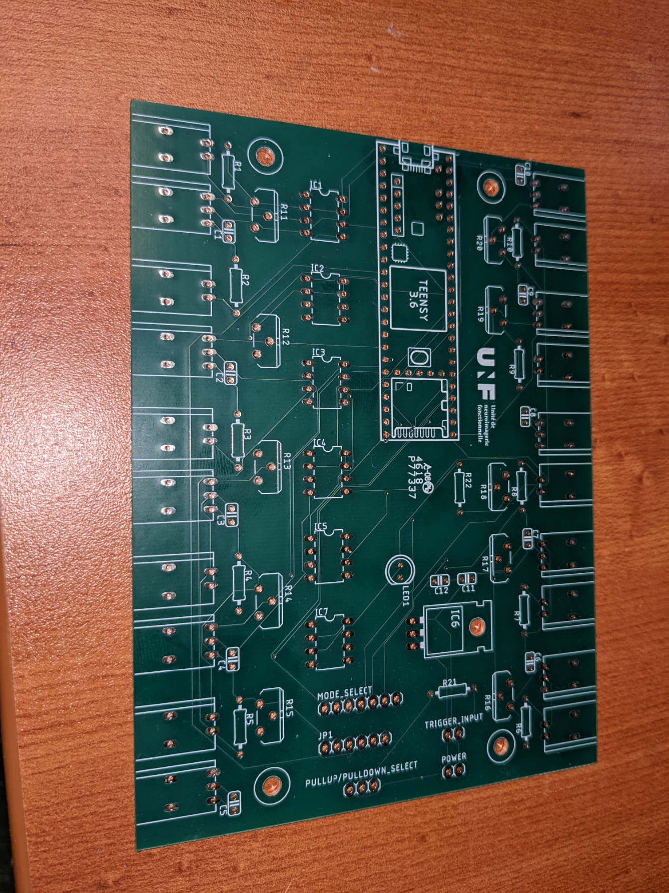
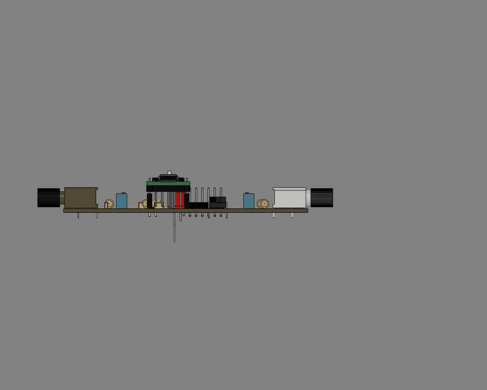
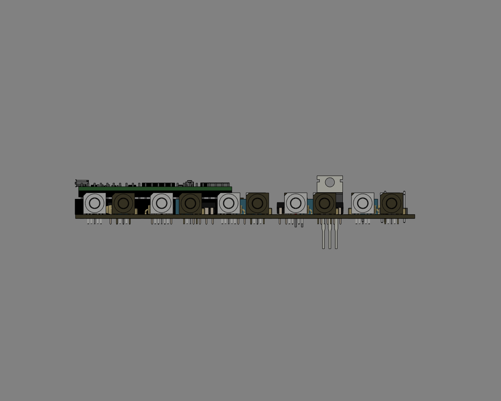
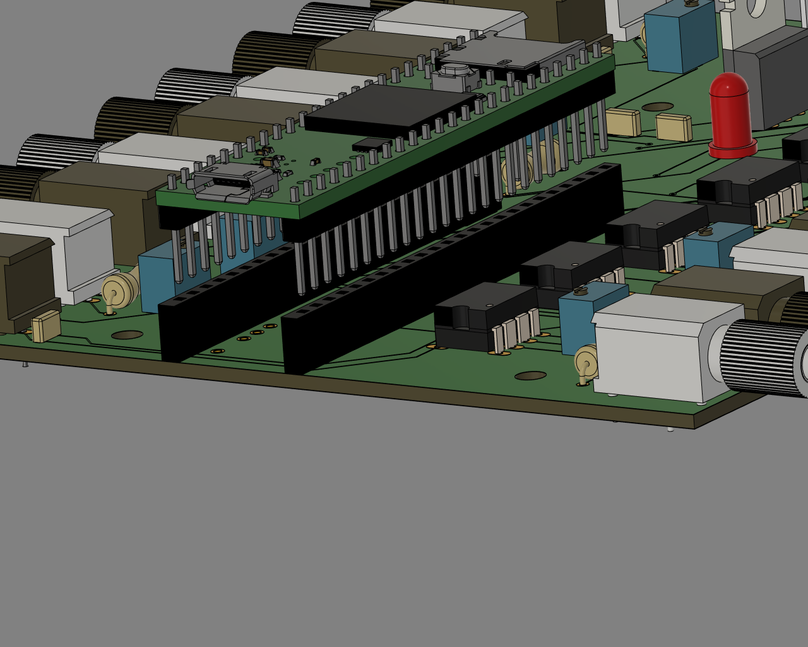
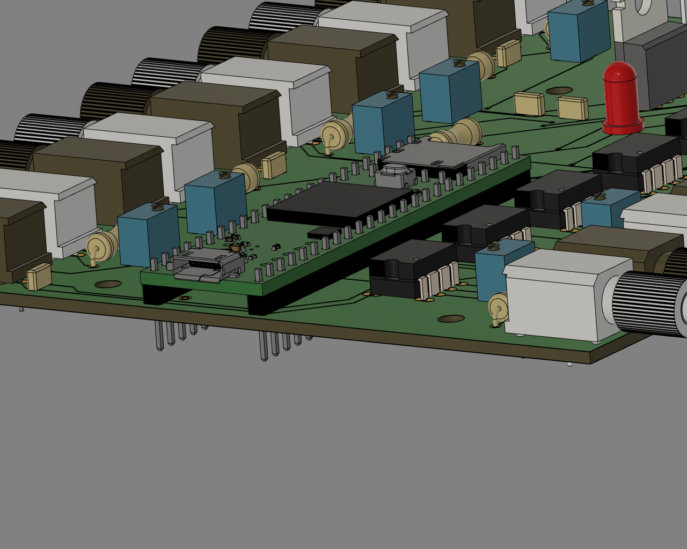
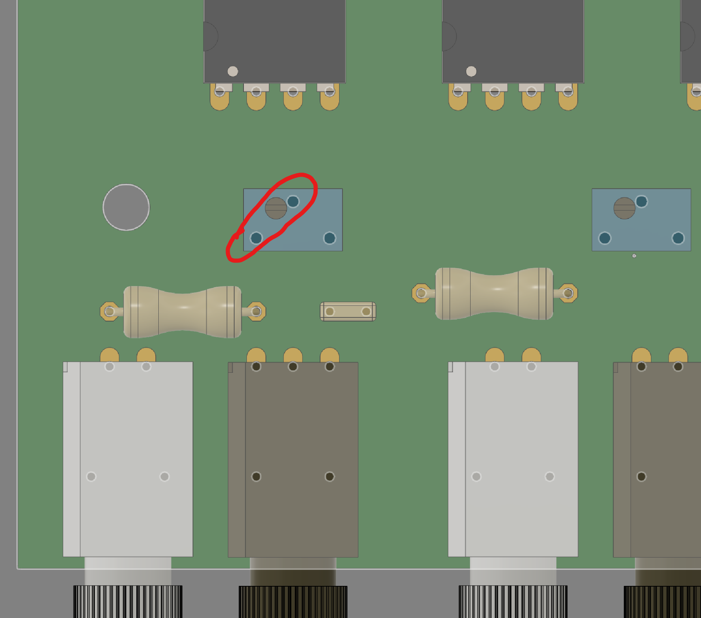
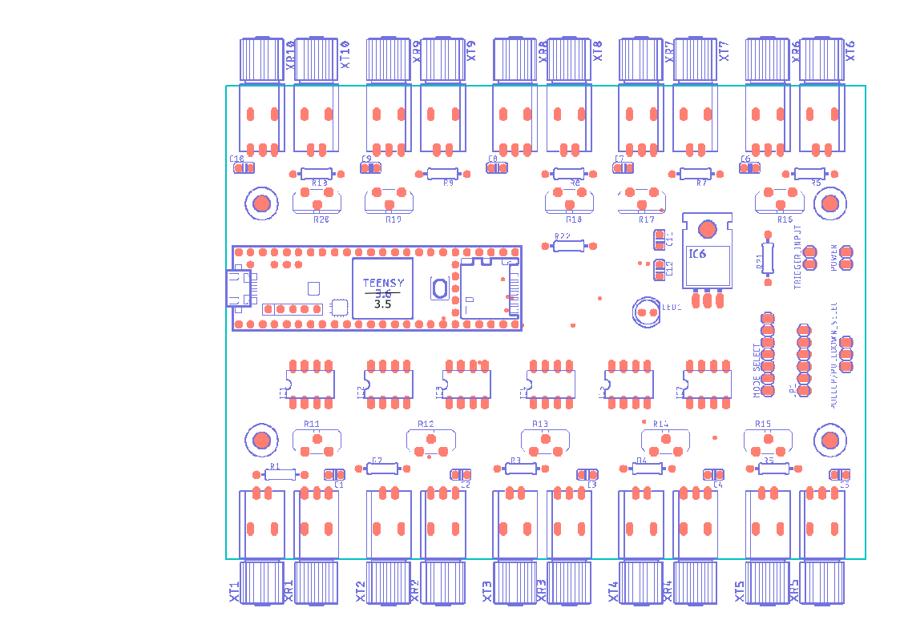

PCB assembly instructions
Get PCB 3D model here
Ordering PCBs
Get Gerber files here and send to fab house
Assembly

Raw PCB view

PCB isometric view

PCB Top view

PCB Side view

PCB Side view
Teensy with headers |
Teensy on PCB |
|---|---|
 |
 |
The Teensy board can be mounted either on headers (left) or directly on PCB (right). The first option is recommended as is allows easy replacement in case of damage.

Adjust potentiometer to be 330 Ω between the two illustrated pins or solder directly a 330 Ω resistor between those pins.

Board layout
Schematics |
Component |
Value |
|---|---|---|
IC1 - IC5, IC7 |
Gate driver |
SN75451BP |
IC6 |
Voltage regulator |
LM340 |
R1 - R10 |
Resistor |
65 Ω |
R11 - R29 |
Resistor |
330 Ω between pin 1 & 3 |
R21 |
Resistor |
5 kΩ |
C1 - C8 |
Capacitor |
0.1 µF |
C11,C12 |
Capacitor |
10 µF |
TX1 - TX10 |
Fiber optic transmitter |
SFH756V |
RX1 - RX10 |
Fiber optic receiver |
SFH551V |
Teensy 3.5 |
Use version 3.5 NOT 3.6 |
TX9,TX10,RX9,RX10 and associated components are optional. They were meant for additional controls not implemented on this version of the controller. They can also be used for troubleshooting purpose or to fix a damaged channel.